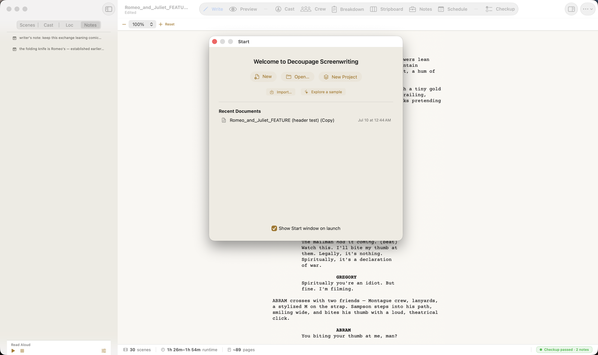

The Start window
When you launch Decoupage, you land on the Start window.

From here you can:
- New — begin a blank screenplay.
- Open… — open an existing Decoupage document (a
.dcpgfile). - New Project — start a project that groups related documents (e.g. episodes).
- Import… — bring in a Fountain, Highland, or Final Draft file (see Opening & importing).
- Explore a sample — open a sample script to poke around.
Your Recent Documents are listed with the date you last touched them — click one to reopen it. You can also drag a file onto the window to open it.
The checkbox "Show Start window on launch" controls what you see when you open the app. Leave it on to always land here; turn it off and Decoupage reopens your most recent document instead. You can always get back to this screen with File → Start….
The document window
Open a document and you get a single window with everything about that script in it. The work is organized into tabs across the top — each is one facet of the same document, and each has a ⌘ + number shortcut:
| Tab | Shortcut | What it's for |
|---|---|---|
| Write | ⌘1 | The editor — where you write the screenplay. |
| Preview | ⌘2 | Print-accurate pages. |
| Crew | ⌘3 | Production company, director, and crew. |
| Cast | ⌘4 | Characters, casting, and per-character voices. |
| Breakdown | ⌘5 | Scene-by-scene elements (props, wardrobe, effects…) and locations. |
| Stripboard | ⌘6 | The color-coded scene board. |
| Notes | ⌘7 | Department notes (camera, wardrobe, and so on). |
| Schedule | ⌘8 | Shoot days. |
| Checkup | ⌘9 | A health check — counts, cast consistency, format review. |
You won't need most of these on day one — you'll live in Write and Preview. The production tabs are there when you're ready for them, covered later in this guide.
Two more pieces frame the window:
- The navigator (left side, toggle with ⌥⌘S) — a switchable list of your Scenes, Characters (Cast), Locations, and Inline Notes. Click any row to jump to it in the editor. The Read-Aloud transport sits pinned at its bottom.
- The vitals bar (bottom) — your document's live scene count, runtime, page count, and checkup status, visible on every tab.
There's also a Reference panel (right side, ⌥⌘R) with a Markup cheat sheet for Fountain — handy while you're learning the syntax.
Opening & importing
Decoupage's own documents are .dcpg files — open them with File → Open or from the Start window. But you can also bring in scripts from other tools:
- Fountain (
.fountain,.txt,.md), Highland (.highland), and Final Draft (.fdx) — via File → Import Screenplay… (⇧⌘I).
When you import a Highland or Final Draft file, Decoupage asks how to handle it (you can set a default in Settings → Import):
- Import an editable copy — detaches a standalone, fully editable Decoupage document. Choose this if you want to write in Decoupage.
- Link to the original — keeps the document in sync with the source file, but read-only here (you keep editing in Highland or Final Draft). Choose this if the other app stays your writing tool.
Fountain and PDF imports are always editable copies.
- ✓Start window: New / Open / New Project / Import / Explore a sample; File → Start… returns to it.
- ✓One window per script, organized into nine tabs (⌘1–⌘9). You'll mostly use Write and Preview.
- ✓⌥⌘S = navigator (scenes/cast/locations/notes); ⌥⌘R = Fountain reference; the vitals bar shows live counts.
- ✓Import Fountain/Highland/FDX with ⇧⌘I — as an editable copy to write here, or a link to keep editing in the other app.